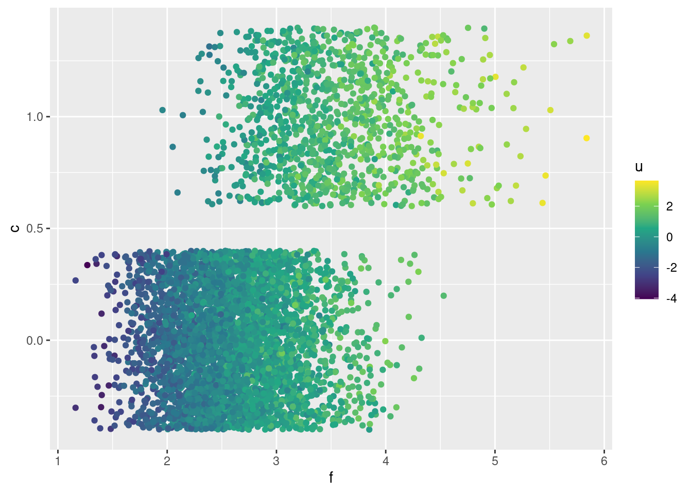

Código
library(tidyverse)
library(DiagrammeR)
library(cmdstanr)library(tidyverse)
library(DiagrammeR)
library(cmdstanr)En esta sección veremos cómo utilizar la lógica de los diagramas causales que vimos en la sección anterior para entender la posibilidad de identificar efectos causales, es decir, entender si es posible desarrollar estrategias para estimar esos efectos causales. Enfatizamos que este proceso es uno lógico que se deriva de nuestro análisis de las estructuras básicas en DAGs que vimos anteriormente, más que de una colección de “trucos” o “recetas”.
Comenzamos con el ejemplo más simple de una variable confusora:
grViz("
digraph {
node [shape = plaintext];
X [label = 'X'];
Y [label = 'Y'];
U [label = 'U'];
X -> Y;
U-> X ;
U -> Y;
{rank = same; X; Y;}
}
", width = 200, height = 50)Nos interesa estimar el efecto causal de \(X\) sobre \(Y\). Sucede que en muchas ocasiones existen variables como \(U\) que son causas comunes de \(X\) y \(Y\). Como vimos, esto implica que no podemos simplemente ver la correlación entre \(X\) y \(Y\) para entender el efecto de \(X\) sobre \(Y\), pues una causa común de variación conjunta entre estas dos variables. Esta variable \(U\) puede ser observada o no.
Este tipo de confusores ocurren muchas veces en datos observacionales (es decir, de un proceso o sistema que funcione sin intervención de los investigadores). Por ejemplo, si un estudio observa que aquellos que se aplicaron (voluntariamente) un tratamiento \(X\), tienen menor riesgo de hospitalización \(Y\) por cierta enfermadad. Sin embargo, se observa también que aquellos que se aplicaron el tratamiento tienen menos riesgo de tener accidentes viales. Esto indica que la observación de la reducción de riesgo de hospitalización entre los que escogieron el tratamiento probablemente se debe al menos en parte a una variable confusora (por ejemplo, qué tipo de actividades hacen, qué tan cautelosos son, etc.)
Cuando es posible, podemos proponer generar nuevos datos donde alteramos el proceso generador. Una forma muy efectiva y útil, que es muy conveniente cuando es posible, es controlar la asignación del tratamiento. Si en el diagrama anterior, diseñamos un estudio donde observamos a un grupo de personas para las cuales el tratamiento se asignó de acuerdo a un proceso aleatorio, entonces el nuevo diagrama para este nuevo proceso generador es:
grViz("
digraph {
node [shape = plaintext];
X [label = 'X'];
Y [label = 'Y'];
R
U [label = 'U'];
R -> X
X -> Y;
U -> Y;
{rank = same; R;X; Y;}
}
")Nótese que:
La variable \(R\) no puede ser endógena (es decir, ninguna flecha del sistema puede incidir en ella), pues se utiliza un dado o algo totalmente no relacionado para asignar el tratamiento. Por ejemplo, también podríamos asignar el tratamiento otra manera determinística como si el día de nacimiento de la persona es par o impar.
En este nuevo diseño, no puede existir una flecha de \(U\) a \(X\), pues nada en \(X\) responde a cambios en \(X\), qué solo depende del proceso de aleatorización \(R\).
En este caso, no es necesario estratificar por ninguna variable y podemos proponer directamente un modelo estadístico para \(Y\) en función de \(X\) que nos permita estimar el efecto causal de \(X\) sobre \(Y\).
Esto describe la idea básica de un experimento simple: es una herramienta para modificar el proceso generador de datos que nos permite identificar efectos causales de manera relativamente simple.
Cuando es posible hacer experimentos de calidad, esta puede ser la mejor forma de estimar efectos causales.
En muchos casos, sin embargo, no es posible hacer experimentos de calidad. Hay varias diversas razones, por ejemplo cuando se trata de experimentos que involucran personas:
Así que muchas preguntas causales no están sujetas a modificaciones del proceso generador de datos mediante aleatorización, y es necesario recurrir a otras estrategias.
Regresamos al diagrama original donde \(U\) es una causa común de \(X\) y \(Y\), y que no tenemos recursos o no es posible hacer un experimento. ¿Existe algún procedimiento estadístico que nos permita estimar el efecto causal de \(X\) sobre \(Y\)?
Escribiremos la distribución condicional de la respuesta \(Y\) dada una manipulación de \(X\) como sigue (es decir, en la situación experimental):
\[p(Y| do(X=x))\]
Esto significa: ¿cómo se distribuye la \(Y\) dado que intervenimos en la población completa (aunque podemos también considerar subpoblaciones más adelante) para poner en \(X=x\)? En primer lugar, notemos que esto no es lo mismo que la distribución condicional usual
\[p(Y|X=x),\] que siempre podemos estimar directamente de los datos, y no es la que nos interesa. En el siguiente ejemplo vemos la distinción entre las dos distribuciones:
Supongamos que tenemos el siguiente diagrama causal. Supondremos también que conocemos todas las relaciones funcionales involucradas.
grViz("
digraph {
graph [ranksep = 0.2]
node [shape=plaintext]
edge [minlen = 3]
T -> A
T -> Z
}
", width = 100, height = 50)Gráfica de datos observacionales
donde \(T\) es la temperatura, \(A\) son las unidades de agua embotellada vendidas y \(Z\) es la actividad de los mosquitos (medido con muestreo, por ejemplo).
No interesa contestar la pregunta: ¿qué tanto influyen las ventas de agua embotellada en la actividad de los mosquitos? Del diagrama, sabemos que no hay ningún camino causal de \(Z\) a \(A\), por lo que nuestra respuesta debería ser igual a 0.
Sin embargo, sabemos que estas dos variables están asociadas (por el análisis de DAGs), de manera que describir cómo cambia \(p(Z|A)\) cuando condicionamos a distintos valores de \(A\) no responde nuestra pregunta. La distribución \(p(Z|do(A = a))\) nos dice cómo se distribuye \(Z\) cuando manipulamos \(a\) artificialmente. Por ejemplo, si cerramos todas las tiendas un día haciendo \(do(A=0)\), veríamos que esta variable no tiene efecto sobre la actividad de mosquitos, por ejemplo comparado con \(do(A = 10000)\).
Ilustramos la diferencia entre \(p(Y|X)\) y \(p(Y|do(X))\) simulando del ejemplo anterior. Supondremos que sólo consideramos un día del año a lo largo de varios años, para no modelar el comportamiento cíclo de la temperatura:
simular_t <- function(n = 10, dia = 150){
# simular un año, alrededor del día 160 (en junio)
t_maxima <- rnorm(n, 28, 2)
mosquitos <- rpois(n, 250 + 10 * (t_maxima - 28))
a_unidades <- rnorm(n, 20000 + 2000 * (t_maxima - 28), 2000)
tibble(t_maxima, a_unidades, mosquitos)
}
set.seed(128)
simular_dias <- simular_t(50)Si simulamos, vemos que \(mosquitos\) y \(unidades\) son dependientes, pues tenemos un camino abierto dado por la bifurcación en temperatura:
ggplot(simular_dias, aes(x = a_unidades, y = mosquitos)) + geom_point() +
geom_smooth(method = "loess", method.args = list(degree = 1)) +
xlab("Ventas de agua embotellada")`geom_smooth()` using formula = 'y ~ x'Sabemos que esta asociación no es causal, pues no hay caminos causales entre estas variables dos variables, pero que hay una dependencia debido a la bifurcación en \(T\). La gráfica muestra que la media condicional \(E[M|A=a]\) depende fuertemente de \(a\), lo que quiere decir que \(p(m|a)\) depende de \(a\) fuertemente.
En este caso, nos interesaría saber qué sucede si alteramos artificalmente el número de botellas de agua vendidas (puedes imaginar distintas maneras de hacer esto).
Como en este ejemplo conocemos todas las relaciones funcionales, y. nuestros supuesto es que el diagrama mostrado es correcto, podemos cambiar nuestra simulación para simular el proceso generador de datos del experimento asociado.
Como veremos, esto se puede entender como una cirugía de la gráfica original donde quitamos las aristas que inciden en \(A\). Desde el punto de vista del proceso generador, si intervenimos el proceso generador deberíamos excluir cómo \(A\) responde a otras variables, pues ahora la estamos fijando:
simular_cirugia <- function(n = 10, a_unidades = a_unidades){
# simular un año, alrededor del día 160 (en junio)
t_maxima <- rnorm(n, 28, 2)
#### cirugía #########
# ahora a_unidades es fijado por nosotros:
# a_unidades <- rnorm(n, 20000 + 2000 * (t_maxima - 28), 2000)
a_unidades <- a_unidades
######################
mosquitos <- rpois(n, 250 + 10 * (t_maxima - 28))
tibble(t_maxima, a_unidades, mosquitos)
}Y ahora simulamos y graficamos \(p(Z|do(A=a))\) para distintos valores de \(a\):
set.seed(128)
simular_dias_2 <- map_df(seq(10000, 30000, 1000),
\(u) simular_cirugia(50, a_unidades = u))ggplot(simular_dias_2, aes(x = a_unidades, y = mosquitos)) +
geom_point() + geom_smooth()`geom_smooth()` using method = 'gam' and formula = 'y ~ s(x, bs = "cs")'cor(simular_dias_2$mosquitos, simular_dias_2$a_unidades)[1] -0.05055934y vemos, como esperaríamos, que no hay relación entre unidades de agua embotellada y mosquitos.
Desde el punto de vista de la gráfica, la manipulación donde fijamos manualmente \(A\) sería:
Cuando hacemos esto, quitamos las aristas que van hacia \(A\), pues \(A\) ya no está determinado por el proceso generador de datos. Tenemos entonces la nueva gráfica:
grViz("
digraph {
graph [ranksep = 0.2]
node [shape=plaintext]
A
edge [minlen = 3]
T -> Z
{ rank = same; A; Z }
}
", width = 100, height = 50)Gráfica con intervención en A
En esta nueva gráfica, \(A\) y \(Z\) son independientes, que es la respuesta correcta. Como cambiamos la gráfica, su proceso generador es diferente al original de los datos observados. Sin embargo, en este ejemplo puedes ver por qué es claro que el cambio que hicimos (manipular \(A\) en lugar de que esté determinado por su proceso generador original) no cambia el modelo de \(Z\), de manera que podemos simular de nuestro nuevo proceso generador donde manipulamos \(A\):
El cálculo do nos da reglas para operar con probabilidades que incluyen nuestro operador do de intervención, y nos dice cómo pasar de cantidades que incluyen manipulaciones do a cantidades estadísticas que se pueden estimar directamente de los datos.
En este ejemplo anterior, veremos cómo es el argumento:
Nótese que al intervenir \(A\) hemos modificado el proceso generador. Si la conjunta original tiene distribución \(p\), escribimos \(p_m\) para la conjunta de la gráfica modificada, de manera que \(p(Z|do(A)) = p_m(Z|A)\): con esto podemos pasar de una pregunta causal (lado izquierdo con operador do) a una estadística (lado derecho).
Aunque intuitivamente vimos cómo simular de esta distribución arriba, especificamos abajo qué reglas son las que nos permiten hacer esto: ¿cómo calculamos \(p_m\)?
En primer lugar, consideremos la marginal \(p_m(T)\). Esta marginal es invariante a nuestra cirugía, pues la arista \(T\to A\) que eliminamos \(T\) no afecta el proceso que determina \(T\). De modo que la marginal del proceso modificado es igual a la marginal observada:
\[p_m(T) = p(T)\] En segundo lugar, tenemos que
\[p_m(Z|T=t,A=a) = p(Z|T=t,A=a),\] Pues el proceso por el cual \(Z\) responde a \(T\) y \(A\) es el mismo, no importa si \(A\) fue modificada artificalmente o no.
Juntamos estos argumentos. Primero, por definición,
\[p(Z|do(A=a)) = p_m(Z|A=a).\]
Ahora por la regla de probabilidad total, podemos condicionar todo a \(T\) y marginalizar. La segunda igualdad la obtenemos por la independencia entre \(T\) y \(Z\) en nuestra gráfica modificada (están \(d\) separadas):
\[p_m(z|a) = \int p_m(z|a,t)p_m(t|a)dt = \int p_m(z|a,t)p_m(t)dt\] En segunda igualdad, nótese que cambiamos \(p_m(t|a) = p_m(t)\), lo cual podemos verificar pues en la gráfica modificada \(A\) y \(T\) están \(d\)-separados, lo que implica que son condicionalmente independientes.
Finalmente, las últimas dos distribuciones podemos extraerlas de los datos, como explicamos arriba \(p_m(z|t,a) = p(z|t,a)\) y \(p_m(t) = p(t),\) y terminamos con la fórmula:
\[p(z|do(a))=p_m(z|a) = \int p(z|a,t)p(t)dt \]
Las dos distribuciones de la derecha están en el contexto de \(p\), el proceso generador de datos original. Así que podemos estimarlas de los datos observados.
En el caso de arriba, simulamos de la distribución para entender cómo se distribuía \(Z\) dependiendo de modificaciones a \(A\). Muchas veces nos interesa calcular solamente la esperanza condicional, es decir, cuál es el valor esperado de la variable de interés dado el nivel intervenido, es decir:
\(E(Z|do(A=a)) = E_m(Z|A =a),\)
que mostramos arriba con la línea ajustada. También quisiéramos calcular contrastes particulares, como qué pasaría si las ventas de agua las aumentamos en 10 mil unidades:
\[E(Z|do(A=30000)) - E(Z|do(A=20000)),\]
Ahora hagamos otro ejemplo donde hay una relación causal que queremos estimar. Imaginemos una ciudad en donde temperaturas altas producen desabasto de agua en algunos hogares, debido a un aumento del riego y uso de agua en general. Nos interesa estimar el efecto del desabasto en las compras de agua embotellada. Nuestro diagrama ahora es:
grViz("
digraph {
graph [ranksep = 0.2]
node [shape=plaintext]
edge [minlen = 3]
U_t -> T
T -> A
T -> D
D -> A
U_a -> A
U_d -> D
{ rank = same; A; D }
}
")simular_t <- function(n = 10, dia = 150){
# simular un año, alrededor del día 160 (en junio)
t_maxima <- rnorm(n, 28, 2)
u <- rnorm(n, 0, 1)
desabasto_agua <- 1/(1 + exp(-(t_maxima - 28) + u))
unidades <- rnorm(n, 20000 + 2000 * (t_maxima - 28) + 8000*desabasto_agua, 2000)
tibble(t_maxima, unidades, desabasto_agua)
}
set.seed(128)
simular_dias <- simular_t(150)ggplot(simular_dias, aes(x = desabasto_agua, y = unidades)) +
geom_point() + geom_smooth()`geom_smooth()` using method = 'loess' and formula = 'y ~ x'La correlación parece muy fuerte, sin embargo, sabemos que hay un camino no causal de asociación entre estas dos variables.
Igual que en ejemplo anterior, vamos a intervenir teóricamente en el desabasto de agua. Después de la cirugía, nuestro diagrama modificado es:
grViz("
digraph {
graph [ranksep = 0.2]
node [shape=plaintext]
edge [minlen = 3]
U_t -> T
T -> A
D -> A
U_a -> A
{ rank = same; A; D }
}
")Ahora queremos calcular \(p(a|do(d)) = p_m(a|d)\) en función de los datos. Siguiendo el mismo argumento que en el ejemplo anterior, sabemos que tenemos que estratificar o condicionar a \(T\) para poder usar nuestro proceso generador de observaciones, y obtenemos:
\[p(a|do(d))=p_m(a|d) = \int p(a|d,t)p(t)dt \] Aunque a veces es posible calcular analíticamente el lado derecho analíticamente, podemos simular como hicimos en los ejemplos anteriores:
simular_cirugia <- function(n = 10, da = 0){
# simular un año, alrededor del día 160 (en junio)
t_maxima <- rnorm(n, 28, 2)
### cirugía ####
#u <- rnorm(n, 0, 1)
desabasto_agua <- da
######
unidades <- rnorm(n, 20000 + 2000 * (t_maxima - 28) + 8000*desabasto_agua, 2000)
tibble(t_maxima, unidades, desabasto_agua)
}
set.seed(128)
simular_dias_c <- map_df(seq(0, 1, 0.1), \(da) simular_cirugia(1000, da = da))ggplot(simular_dias_c, aes(x = desabasto_agua, y = unidades)) +
geom_point() + geom_smooth()`geom_smooth()` using method = 'gam' and formula = 'y ~ s(x, bs = "cs")'Podemos también resumir promediando:
efecto_verdadero_desabasto <- simular_dias_c |>
group_by(desabasto_agua) |>
summarise(media_unidades = mean(unidades)) |>
rename(desabasto = desabasto_agua)
ggplot(efecto_verdadero_desabasto,
aes(x = desabasto, y = media_unidades)) +
geom_point() + geom_smooth()`geom_smooth()` using method = 'loess' and formula = 'y ~ x'Y este es el efecto causal del desabasto de agua. No tenemos medidas de incertidumbre pues conocemos todos los parámetros de los modelos. La media condicional parece ser lineal, así que podríamos resumir con un modelo lineal:
# Modelo 1 (con datos de intervención)
lm(unidades ~ desabasto_agua, simular_dias_c)
Call:
lm(formula = unidades ~ desabasto_agua, data = simular_dias_c)
Coefficients:
(Intercept) desabasto_agua
19831 8272 Aproximadamente, cada incremento en puntos porcentuales de 10% en desabasto incrementa las ventas en unas 800 unidades. Compara con el análisis donde no estratificamos o controlamos por la temperatura:
# Modelo 2
lm(unidades ~ desabasto_agua, simular_dias)
Call:
lm(formula = unidades ~ desabasto_agua, data = simular_dias)
Coefficients:
(Intercept) desabasto_agua
14102 19491 Otra forma de estratificar es ajustando un modelo que incluye la variable de temperatura. Podríamos hacer
# Modelo 3
lm(unidades ~ desabasto_agua + t_maxima, simular_dias)
Call:
lm(formula = unidades ~ desabasto_agua + t_maxima, data = simular_dias)
Coefficients:
(Intercept) desabasto_agua t_maxima
-35030 8648 1948 En resumen, tenemos la primera regla de Pearl de inferencia causal:
Consideramos una DAG donde los padres de \(X\) son \(Z_1,Z_2\). El efecto causal total de \(X\) en \(Y\) se puede calcular como
\[p(y|do(x)) = \int p(y|x, z_1,z_2) p(z_1,z_2)\, dz_1dz_2\] Es decir, condicionamos al valor de \(x\) y todos los padres de \(X\) para calcular \(p(y|x,z_1,z_2)\), y después marginalizamos sobre los padres.
Esta fórmula se extiende a más de dos padres \(Z_1,Z_2,Z_3,\ldots, Z_k\).
A este proceso se llama de diferentes maneras en distintos contextos:
Podemos pensar en esta fórmula de dos maneras: en primer lugar, si estamos modelando toda nuestra gráfica causal, podemos simular de la conjunta de la gráfica mutilada:
El otro enfoque busca sólo construir modelos para la parte que nos interesa:
Finalmente, si tenemos un modelo \(p(y| t, z)\) podemos también investigar cómo se comporta \(E[y|t_2,z] - E[y|t_1,z]\) para distintos combinaciones de valores de \(Z\).
Nota 1: Con este principio podemos resolver algunos problemas, pero no todos. Veremos que en algunos casos existen padres que no son observados, por ejemplo, no es posible condicionar para usar la fórmula de ajuste y es necesario desarrollar otras estrategias.
Nota 2: En regresión lineal, cuando incluímos una variable en el modelo (que consideramos una variable control), estamos estratificando por ella: por ejemplo, en el modelo lineal \(U\sim N(m_u(d,t), \sigma_u)\), donde
\[m_u = \beta_0 +\beta_1 d + \beta_2 t\] Estamos calculando un estimador para cada valor de \(T=t\), que es:
\[m_u = (\beta_0 + \beta_2 t) + \beta_1 d = \gamma_0 + \gamma_1 d\] Esta es una de las maneras más simples de obtener el efecto de \(d\) estratificando por, o controlando por \(t\), siempre y cuando los modelos lineales sean apropiados.
Nótese que en este último caso, tenemos que el efecto de \(d\) no depende de las covariables, de forma que no es necesario hacer el promedio sobre la conjunta, es decir, suponemos que el efecto causal es el mismo independientemente de los valores de las variables de control. Sin embargo, este no siempre es el caso.
Nota 3 Sin nuestro modelo \(p(y|t,z)\) es lineal, y nos interesa calcular el efecto causal promedio de la variable \(t\), no es necesario promediar por la conjunta de \(p(z)\). Bajo estas condiciones, el efecto causal promedio está simplemente dado por el coeficiente de \(t\) en el modelo lineal. Sin embargo, si este no es el caso, entonces para estimar el efecto causal promedio es necesario promediar apropiadamente según la fórmula de ajuste.
En McElreath (2020), McElreath presenta un ejemplo interesante de por qué es necesario marginalizar sobre las variables de estratificación que no son el tratamiento. En su diagrama causal, la cantidad de guepardos afecta la población de babuinos y de gacelas, y también la población de babuinos afecta la población de gacelas. Cuando hay muchos guepardos, los babuinos no cazan, de forma que el efecto \(Babuinos\to Gazelas\) es débil. Cuando hay pocos guepardos, sin embargo, el efecto \(Babuinos\to Gazelas\) es fuerte pues los babuinos pueden aventurarse a cazar. Podemos obtener un efecto causal promedio marginalizando sobre la cantidad de guepardos.
Otro ejemplo que podríamos considerar es el de intervenir por ejemplo un semáforo para agilizar la vialidad. El tráfico previo influye la decisión de intervenir un semáforo, y también influye en el tráfico actual. Cuando el tráfico previo es bajo, la intervención tiene poco efecto, pero cuando el tráfico previo es alto, al intervención tiene un efecto más fuerte.
En las partes anteriores vimos que estratificando por los padres de la variable de tratamiento \(X\) podemos construir un estimador del efecto de \(X\) sobre otra variable \(Y\), pasando de una distribución observacional a una conceptualmente experimental (dado que los supuestos causales sean aproximadamente correctos).
Sin embargo, esta aplicación de la fórmula de ajuste no funciona si existen padres que no fueron observados, y por tanto no podemos estratificar por ellos. El siguiente método (ajuste por “puerta trasera”) nos da una generalización que podemos usar dado ciertos tipos de estructura en nuestro modelo causal (veremos también por ejemplo, que a veces podemos usar menos variables que padres de la variable de interés). Nótese que una vez más, este criterio sólo depende de la gráfica causal \(G\) asociada a nuestro modelo, y no los modelos locales que utilizemos para modelar la condicional de cada nodo.
Si tenemos dos variables \(T\) y \(Y\) en una gráfica \(G\), un conjunto \(Z\) de variables satisface el criterio de puerta trasera relativo a \(T\) y \(Y\) cuando \(Z\) bloquea cualquier camino entre \(T\) y \(Y\) que tenga una arista que incida en \(T\), y ninguna variable de \(Z\) es descendiente de \(T\).
En tal caso, podemos utilizar la fórmula de ajuste, pero en lugar de estratificar por los padres de \(T\), estratificamos por las variables en \(Z\)
La idea es:
Cumplimos 1 al estratificar por variables que bloquean los caminos que son causas de \(T\), pues estos caminos no son causales y distorsionan la relación entre \(T\) y \(Y\). Al mismo tiempo, no bloqueamos caminos causales porque ningúna variable de \(Z\) es descendiente de \(T\), de modo que se satisface el criterio 2 (todos los caminos causales comienzan con \(T\to\)). Finalmente, al excluir descendientes de \(T\) también implica que no condicionamos a colisionadores del tipo \(T\to \cdots \to Z_1\gets Y\), pues esto activa un camino no causal entre \(T\) y \(Y\) (se cumple 3).
Consideramos primero este ejemplo simple, donde queremos evaluar la efectividad de un tratamiento en cierta enfermedad. Los datos que tenemos disponibles son si una persona recibió o no un tratamiento, y si se recuperó o no. No se registró el nivel socioeconómico, pero sabemos que el tratamiento es caro, de forma que fue accedido más por gente de NSE más alto. También que sabemos que para este tipo de tratamiento, el peso de la persona es un factor importante. Nuestros supuestos están en la siguiente gráfica:
grViz("
digraph {
graph [ranksep = 0.2, rankdir = LR]
node [shape=plaintext]
Trata
Res
node [shape = circle]
NSE
Peso
U
edge [minlen = 3]
NSE -> Peso
NSE -> Trata
Trata -> Res
Peso -> Res
U -> NSE
U -> Peso
}
")Observamos que no podemos directamente usar la fórmula de ajuste pues NSE no es una variable observada.
En esta circunstancia no podríamos identificar el efecto causal, pues existen un caminos abiertos no causales. Quizá el tratamiento no es muy efectivo, y parece ser bueno pues fue aplicado a personas con menor peso que las que no recibieron el tratamiento, a través del efecto de NSE. Sin embargo, supón que tuviéramos disponible la variable Peso:
grViz("
digraph {
graph [ranksep = 0.2, rankdir = LR]
node [shape=plaintext]
Trata
Res
Peso
node [shape = circle]
NSE
U
edge [minlen = 3]
NSE -> Peso
NSE -> Trata
Trata -> Res
Peso -> Res
U -> NSE
U -> Peso
}
")En este caso, todavía no podemos aplicar la fórmula original de ajuste pues no conocemos \(NSE\). Sin embargo, podemos bloquear los caminos no causales estratificando por Peso, y entonces podemos usar el criterio de puerta trasera para identificar el efecto del tratamiento, aún cuando no tengamos NSE.
Primero consideramos un modelo generador:
inv_logit <- function(x) 1 / (1 + exp(-x))
simular_bd <- function(n = 10){
nse <- sample(c(0, 1), n, replace = TRUE)
peso <- rnorm(n, 70 - 7 * nse, 12 + 2 * nse)
trata <- rbinom(n, 1, 0.8 * nse + 0.2 * (1 - nse))
p_trata <- inv_logit(1 * trata - 0.2 * (peso - 70))
res <- rbinom(n, 1, p_trata)
tibble(nse, peso, trata, res)
}
datos_bd <- simular_bd(10000)
head(datos_bd)# A tibble: 6 × 4
nse peso trata res
<dbl> <dbl> <int> <int>
1 1 71.9 0 0
2 0 45.0 0 1
3 0 73.5 0 0
4 0 66.1 0 1
5 1 49.4 1 1
6 0 69.0 1 1Veamos qué sucede si cruzamos tratamiento con resultado (es una muestra grande y el error de estimación no es importante):
datos_bd |>
count(trata, res) |>
group_by(trata) |>
mutate(p = n / sum(n)) |>
filter(res == 1) |>
ungroup() |>
mutate(dif = p - lag(p))# A tibble: 2 × 5
trata res n p dif
<int> <int> <int> <dbl> <dbl>
1 0 1 2678 0.533 NA
2 1 1 3686 0.741 0.208Sabemos que esta diferencia en respuesta puede estar confundida por un camino no causal. El verdadero efecto casual podemos calcularlo en nuestras simulaciones como sigue a partir de nuestro modelo (igualmente, usamos una muestra muy grande):
simular_efecto <- function(n = 10, peso = NULL){
# cómo es la población
nse <- sample(c(0, 1), n, replace = TRUE)
if(is.null(peso)){
peso <- rnorm(n, 70 - 7 * nse, 12 + 2 * nse)
}
# asignar al azar
trata <- rbinom(n, 1, 0.5)
p_trata <- inv_logit(1 * trata - 0.2 * (peso - 70))
res <- rbinom(n, 1, p_trata)
tibble(nse, peso, trata, res)
}
sims_efecto <- simular_efecto(20000)
resumen <- sims_efecto |>
count(trata, res) |>
group_by(trata) |>
mutate(p = n / sum(n)) |>
filter(res == 1) |>
ungroup() |>
mutate(dif = p - lag(p))
dif_real <- resumen$dif[2]
resumen# A tibble: 2 × 5
trata res n p dif
<int> <int> <int> <dbl> <dbl>
1 0 1 5929 0.590 NA
2 1 1 6996 0.703 0.113La estimación ingenua del cruce simple es mucho más grande que el verdadero efecto.
Podemos también calcular el efecto para un peso particular:
sims_efecto <- simular_efecto(20000, peso = 70)
res_70 <- sims_efecto |>
count(trata, res) |>
group_by(trata) |>
mutate(p = n / sum(n)) |>
filter(res == 1) |>
ungroup() |>
mutate(dif = p - lag(p))
dif_70 <- res_70$dif[2]
res_70# A tibble: 2 × 5
trata res n p dif
<int> <int> <int> <dbl> <dbl>
1 0 1 5002 0.500 NA
2 1 1 7344 0.735 0.235Suponiendo nuestro diagrama, queremos estimar estratificando por peso. Podríamos usar un sólo modelo logístico, pero pueden ser más simples los cálculos si construimos nuestro modelo en stan. En este caso, podríamos calcular las diferencias para un peso particular, por ejemplo 70 kg (en lugar de modelar estaturas para producir una estimación de diferencia promedio).
Usaremos una muestra de 2 mil personas:
mod_trata <- cmdstan_model("./src/trata-backdoor.stan")
print(mod_trata)data {
int<lower=0> N;
vector[N] trata;
array[N] int res;
vector[N] peso;
}
transformed data {
real media_peso;
// centrar
media_peso = mean(peso);
}
parameters {
real gamma_0;
real gamma_1;
real gamma_2;
}
transformed parameters {
vector[N] p_logit_res;
p_logit_res = gamma_0 + gamma_1 * trata + gamma_2 * (peso - media_peso);
}
model {
// modelo de resultado
res ~ bernoulli_logit(p_logit_res);
gamma_0 ~ normal(0, 2);
gamma_1 ~ normal(0, 1);
gamma_2 ~ normal(0, 0.2);
}
generated quantities {
real dif_trata;
real p_trata;
real p_no_trata;
real peso_sim = 70;
{
array[2000] int res_trata;
array[2000] int res_no_trata;
for(k in 1:2000){
res_trata[k] = bernoulli_rng(
inv_logit(gamma_0 + gamma_1 * 1 +
gamma_2 * (peso_sim - media_peso)));
res_no_trata[k] = bernoulli_rng(
inv_logit(gamma_0 + gamma_1 * 0 +
gamma_2 * (peso_sim - media_peso)));
}
dif_trata = mean(res_trata) - mean(res_no_trata);
}
}set.seed(915)
datos_bd <- simular_bd(2000)
datos_lista <- list(N = nrow(datos_bd),
trata = datos_bd$trata, res = datos_bd$res,
peso = datos_bd$peso)
ajuste <- mod_trata$sample(data = datos_lista, refresh = 1000)Running MCMC with 4 sequential chains...
Chain 1 Iteration: 1 / 2000 [ 0%] (Warmup)
Chain 1 Iteration: 1000 / 2000 [ 50%] (Warmup)
Chain 1 Iteration: 1001 / 2000 [ 50%] (Sampling)
Chain 1 Iteration: 2000 / 2000 [100%] (Sampling)
Chain 1 finished in 1.9 seconds.
Chain 2 Iteration: 1 / 2000 [ 0%] (Warmup)
Chain 2 Iteration: 1000 / 2000 [ 50%] (Warmup)
Chain 2 Iteration: 1001 / 2000 [ 50%] (Sampling)
Chain 2 Iteration: 2000 / 2000 [100%] (Sampling)
Chain 2 finished in 2.0 seconds.
Chain 3 Iteration: 1 / 2000 [ 0%] (Warmup)
Chain 3 Iteration: 1000 / 2000 [ 50%] (Warmup)
Chain 3 Iteration: 1001 / 2000 [ 50%] (Sampling)
Chain 3 Iteration: 2000 / 2000 [100%] (Sampling)
Chain 3 finished in 1.9 seconds.
Chain 4 Iteration: 1 / 2000 [ 0%] (Warmup)
Chain 4 Iteration: 1000 / 2000 [ 50%] (Warmup)
Chain 4 Iteration: 1001 / 2000 [ 50%] (Sampling)
Chain 4 Iteration: 2000 / 2000 [100%] (Sampling)
Chain 4 finished in 2.0 seconds.
All 4 chains finished successfully.
Mean chain execution time: 1.9 seconds.
Total execution time: 8.1 seconds.sims <- ajuste$draws( format = "df")
resumen <- ajuste$summary(c( "dif_trata"))resumen |> select(variable, mean, q5, q95)# A tibble: 1 × 4
variable mean q5 q95
<chr> <dbl> <dbl> <dbl>
1 dif_trata 0.214 0.162 0.268sims |> select(dif_trata) |>
ggplot(aes(x = dif_trata)) + geom_histogram() +
geom_vline(xintercept = dif_70, colour = "red")Warning: Dropping 'draws_df' class as required metadata was removed.`stat_bin()` using `bins = 30`. Pick better value with `binwidth`.Y obtenemos una estimación correcta del efecto en 70 kg. Podríamos también calcular el efecto en distintos pesos (nuestro estimador es una curva), promediar estimando una distribución de pesos modelada, o tomar una distribución fija de pesos para modelar (cada una de estas estrategias tiene propósitos diferentes).
Si queremos tener un efecto promedio, podemos modelar los pesos. Otra estrategia es promediar sobre los valores observados de la muestra. Nótese que esto ignora una parte de la incertidumbre proveniente de la muestra particular usada.
mod_trata <- cmdstan_model("./src/trata-backdoor-promedio.stan")
print(mod_trata)data {
int<lower=0> N;
vector[N] trata;
array[N] int res;
vector[N] peso;
}
transformed data {
real media_peso;
// centrar
media_peso = mean(peso);
}
parameters {
real gamma_0;
real gamma_1;
real gamma_2;
}
transformed parameters {
vector[N] p_logit_res;
p_logit_res = gamma_0 + gamma_1 * trata + gamma_2 * (peso - media_peso);
}
model {
// modelo de resultado
res ~ bernoulli_logit(p_logit_res);
gamma_0 ~ normal(0, 2);
gamma_1 ~ normal(0, 1);
gamma_2 ~ normal(0, 0.2);
}
generated quantities {
real dif_trata;
real p_trata;
real p_no_trata;
vector[N] probs;
for(i in 1:N){
probs[i] = 1.0 / N;
}
{
array[2000] int res_trata;
array[2000] int res_no_trata;
for(k in 1:2000){
real peso_sim = peso[categorical_rng(probs)];
res_trata[k] = bernoulli_rng(
inv_logit(gamma_0 + gamma_1 * 1 +
gamma_2 * (peso_sim - media_peso)));
res_no_trata[k] = bernoulli_rng(
inv_logit(gamma_0 + gamma_1 * 0 +
gamma_2 * (peso_sim - media_peso)));
}
p_trata = mean(res_trata);
p_no_trata = mean(res_no_trata);
}
dif_trata = p_trata - p_no_trata;
}datos_lista <- list(N = nrow(datos_bd),
trata = datos_bd$trata, res = datos_bd$res,
peso = datos_bd$peso)
ajuste <- mod_trata$sample(data = datos_lista, refresh = 1000)Running MCMC with 4 sequential chains...
Chain 1 Iteration: 1 / 2000 [ 0%] (Warmup)
Chain 1 Iteration: 1000 / 2000 [ 50%] (Warmup)
Chain 1 Iteration: 1001 / 2000 [ 50%] (Sampling)
Chain 1 Iteration: 2000 / 2000 [100%] (Sampling)
Chain 1 finished in 11.0 seconds.
Chain 2 Iteration: 1 / 2000 [ 0%] (Warmup)
Chain 2 Iteration: 1000 / 2000 [ 50%] (Warmup)
Chain 2 Iteration: 1001 / 2000 [ 50%] (Sampling)
Chain 2 Iteration: 2000 / 2000 [100%] (Sampling)
Chain 2 finished in 10.9 seconds.
Chain 3 Iteration: 1 / 2000 [ 0%] (Warmup)
Chain 3 Iteration: 1000 / 2000 [ 50%] (Warmup)
Chain 3 Iteration: 1001 / 2000 [ 50%] (Sampling)
Chain 3 Iteration: 2000 / 2000 [100%] (Sampling)
Chain 3 finished in 10.9 seconds.
Chain 4 Iteration: 1 / 2000 [ 0%] (Warmup)
Chain 4 Iteration: 1000 / 2000 [ 50%] (Warmup)
Chain 4 Iteration: 1001 / 2000 [ 50%] (Sampling)
Chain 4 Iteration: 2000 / 2000 [100%] (Sampling)
Chain 4 finished in 10.8 seconds.
All 4 chains finished successfully.
Mean chain execution time: 10.9 seconds.
Total execution time: 43.9 seconds.sims <- ajuste$draws(c("dif_trata"), format = "df")resumen <- ajuste$summary(c( "dif_trata"))
resumen |> select(variable, mean, q5, q95)# A tibble: 1 × 4
variable mean q5 q95
<chr> <dbl> <dbl> <dbl>
1 dif_trata 0.111 0.0805 0.141sims |> select(dif_trata) |>
ggplot(aes(x = dif_trata)) + geom_histogram() +
geom_vline(xintercept = dif_real, colour = "red")Warning: Dropping 'draws_df' class as required metadata was removed.`stat_bin()` using `bins = 30`. Pick better value with `binwidth`.Y recuperamos nuevamente el efecto verdadero que mostramos arriba.
Existen tres axiomas básicos del cálculo-do de las que se derivan los demás resultados, como veremos en el siguiente ejemplo del criterio de la puerta delantera.
Antes de verlas, un resumen rápido de las reglas es el siguiente:
La regla 1 nos dice que las distribuciones asociadas a intervenciones satisfacen también la equivalencia de \(d\)-separación e independencia condicional: si \(Y\) y \(Z\) están \(d\)-separadas dado en la gráfica manipulada, entonces \(p(y | do(x), z) = p(y|do(x))\).
La regla 2 es el criterio de la puerta trasera: si condicionamos a variables \(W\) que bloquean toda puerta trasera de \(X\) a \(Y\), podemos cambiar \(do(x)\) por \(x\): \(p(y | do(x), w) = p(y | x, w)\).
La regla 3 expresa que si no hay caminos causales de \(X\) a \(Y\), entonces \(p(y|do(x)) = p(y)\).
Si un efecto causal es identificable (puede expresarse en términos de cantidades observacionales), entonces puede derivarse una estrategia de identificación a partir de las tres reglas del cálculo-do.
Nota: esto no excluye que bajo ciertas hipótesis adicionales a las de nuestra gráfica causal (por ejemplo cómo se comportan las distribuciones particulares qeu componen el modelo), sea posible identificar efectos causales con otros medios que van más allá del cálculo-do.
Con más generalidad, abajo están estas reglas (donde condicionamos a más variables o hacemos más intervenciones, y afinamos las condiciones):
Denotamos por \(G_m\) la gráfica mutilada por \(do(x)\), donde quitamos todas las aristas que entran en \(X\). Los tres axiomas son:
Regla 1 Ignorar observaciones: Si \(Y\) y \(Z\) están \(d\)-separados por \(X\) y \(W\) en \(G_m\),
\[ p(y|do(x), z, w) = p(y|do(x), w)\] O en otras palabras, si \(p_m\) es la conjunta para \(G_m\),
\[p_m(y|x,z,w) = p_m(y|x, w)\] es cierto si \(Y\) y \(Z\) están \(d\)-separados por \(X\) y \(W\) en \(G_m\) (condicionalmente independientes). Así que esta regla es independencia condicional dado \(d\)-separación, pero para la gráfica intervenida.
Regla 2 Usando observaciones como intervenciones:
Si \(Y\) y \(Z\) están \(d\)-separados por \(X\) y \(W\) en \(G_m\) quitándole todas las aristas que salen de \(Z\), entonces
\[ p(y|do(x), do(z), w) = p(y|do(x), z, w)\] Regla 3 Ignorar intervenciones:
Si \(Z\) y \(Y\) están \(d\)-separadas por \(X\) y \(W\) en la gráfica \(G_m\) donde además quitamos cualquier arista a \(Z\) si \(Z\) no es antecesor de \(W\) en \(G_m\), entonces:
\[ p(y|do(x), do(z), w) = p(y|do(x), w)\]
En algunos casos, puede ser que no sea posible bloquear algún camino no causal con variables observadas. Un ejemplo clásico es el de la discusión acerca de la relación de fumar con cáncer de pulmón. Algunos estadísticos plantearon que los estudios de asociación entre fumar y cáncer de pulmón podrían tener efectos gravemente confundidos, por ejemplo, por aspectos genéticos que hacen a una persona propensa a fumar al mismo tiempo que aumenta su probabilidad de fumar:
grViz("
digraph {
graph [ranksep = 0.2]
node [shape=plaintext]
F
C
node [shape = circle]
U
edge [minlen = 3]
U -> F
U -> C
F -> C
{rank= same; C; F}
}
")En este caso, el efecto de fumar (\(F\)) sobre cáncer (\(C\)) no es identificable pues no podemos condicionar a la variable de Genotipo (\(U\)). Supongamos que tenemos una medida adicional, que es la cantidad de depósitos de alquitrán den los pulmones de los pacientes. Este es es afectado por \(F\), y a su vez, el alquitrán incrementa la probabilidad de cáncer:
grViz("
digraph {
graph [ranksep = 0.2]
node [shape=plaintext]
F
C
A
node [shape = circle]
U
edge [minlen = 3]
U -> F
U -> C
F -> A
A -> C
{rank= same; C; F; A}
}
")La idea es primero estimar el efecto de \(F\) sobre \(A\), y después estimar el efecto de \(A\) sobre \(C\). La “composición” de estos dos efectos, dado el diagrama, debe darnos el estimador correcto. Primero consideramos el efecto de \(F\) sobre \(A\), y tenemos que (regla 2)
\[p(a|do(f)) = p(a|f),\] La igualdad se debe a que una vez que condicionamos a \(F\) no hay puertas traseras entre \(F\) y \(A\) (pues no condicionamos a \(C\)). Esta dependencia causal la podemos entonces estimar de los datos.
El efecto de \(A\) sobre \(C\) también es identificable, pues el camino no causal se bloquea cuando condicionamos a \(F\), de forma que por la fórmula de ajuste:
\[p(c|do(a)) = \int p(c|a, f') p(f')\, df'\]
Ahora encadenamos estas dos ecuaciones:
\[p(c|do(f)) = \int p(c|do(a))p(a|f)\,da\]
que equivale en simulación a: dado un valor de \(F\), simulamos \(A\) con nuestro modelo ajustado con datos naturales. Ahora intervenimos \(A\) con el valor \(a\) que obtuvimos y simulamos \(C\). Sin embargo, para hacer este último paso con datos naturales, necesitamos usar el criterio de puerta trasera como explicamos arriba: simulamos entonces \(f´\) de \(p(f)\), y después simulamos \(C\) en función de \(a\) y \(f´\) (con una distribución construida a partir de datos).
Requerimos en este caso construir y estimar la condicional \(p(c|a, f)\) basado en los datos.
En fórmula, en general, se escribe como:
Decimos que un conjunto de variables \(A\) satisface el criterio de puerta delantera en relación a las variables \(F\) y \(C\) cuando:
Si \(A\) satisface el criterio de puerta delantera en relación a \(F\) y \(C\), entonces el efecto causal de \(F\) en \(C\) es identificable y está dado por la fórmula:
\[p(c|do(f)) = \int \left [ \int p(c|a,f´)p(f´)\,df´ \right ] p(a|f)\,da\]
Todas estas cantidades puede estimarse de los datos.
Antes de aplicar este nuevo procedimiento, describamos el proceso generador que utilizaremos:
# simular distribución natural
simular_fd <- function(n = 10, efecto_a = 0.3){
## causa común
u <- rnorm(n, 0, 1);
# cantidad que fuma
f <- exp(rnorm(n, 1 + 0.2 * u, 0.1))
# acumulación de alquitrán
a <- rnorm(n, 4 * f, 2)
# probabilidad de cancer
p_c <- inv_logit(-6 + efecto_a * a + 2 * u)
c <- rbinom(n, 1, p_c)
tibble(f, a, c, u)
}
# simular datos intervenidos (suponiendo que conocemos todo)
sim_int_f <- function(n = 100, do_f = 0.3, efecto_a = 0.3){
a <- rnorm(n, 4 * do_f, 2)
u <- rnorm(n, 0, 1)
p_c <- inv_logit(-6 + efecto_a * a + 2 * u)
c <- rbinom(n, 1, p_c)
tibble(do_f = do_f, media_c = mean(c))
}set.seed(4481)
sims_fd <- simular_fd(5000)
sims_fd_1 <- simular_fd(10000)
qplot(sims_fd$f, sims_fd$a)Warning: `qplot()` was deprecated in ggplot2 3.4.0.¿Cómo se ve la relación de fumador con cáncer? En esta gráfica mostramos también el valor de la variable no observada \(U\). Nótese que parte de la correlación positiva que existe es debido a esta variable \(U\).
ggplot(sims_fd, aes(x = f, y = c, colour = u)) +
geom_jitter() + scale_colour_continuous(type = "viridis")
Ahora veamos cómo se ve el efecto de \(F\) sobre \(C\) y también cómo se ve el cruce de \(F\) y \(C\) en los datos naturales:
sims_1 <- map_df(seq(1, 4, 0.5), ~ sim_int_f(100000, .x))
sims_1 |>
ggplot() + geom_line(aes(x = do_f, y = media_c)) +
geom_smooth(data = sims_fd_1, aes(x = f, y = c), method = "loess", span = 0.3, se = FALSE, colour ="red") + xlab("Grado de tabaquismo") +
xlim(c(1,4))`geom_smooth()` using formula = 'y ~ x'Warning: Removed 376 rows containing non-finite values (`stat_smooth()`).En efecto causal promedio de fumar, en cada nivel, sobre la incidencia de cáncer de pulmón, suponiendo nuestro proceso generador. Nótese que la relación no es tan fuerte como observamos en los datos naturales (en rojo). Esto se debe a que en los datos naturales, las personas existe una causa común entre no fumar y prevenir cáncer de pulmón.
Veamos cómo sería la estimación si tuviéramos datos disponible, y si es que podemos recuperar el efecto correcto dados los datos observados y la técnica de puerta delantera.
Nótese que sólo necesitamos \(p(c|a, f), p(a|f)\) y \(p(f)\). Estos son modelos estadísticos con el que podemos identificar el efecto que nos interesa. Una vez que los estimemos, podemos usar simulación:
set.seed(481)
sims_fd <- simular_fd(2000)
mod_front_door <- cmdstan_model("./src/front-door.stan")
print(mod_front_door)data {
int<lower=0> N;
int<lower=0> n_f;
vector[N] f;
vector[N] a;
array[N] int<lower=0, upper=1> c;
array[n_f] real do_f;
}
transformed data {
real media_a;
real media_f;
media_a = mean(a);
media_f = mean(f);
}
parameters {
real<lower=0> alpha;
real alpha_a;
real<lower=0> alpha_f;
real int_a;
real beta_0;
real<lower=0> beta_1;
real<lower=0> beta;
real<lower=0> a_f;
real<lower=0> b_f;
real<lower=0> sigma_a;
real<lower=0> sigma_f;
}
transformed parameters {
}
model {
f ~ gamma(a_f, b_f);
a ~ normal(beta * f, sigma_a);
c ~ bernoulli_logit(int_a + alpha_a * a + alpha_f * f);
alpha_a ~ normal(0, 1);
alpha_f ~ normal(0, 1);
int_a ~ normal(0, 3);
sigma_a ~ normal(0, 1);
sigma_f ~ normal(0, 0.1);
alpha ~ normal(0, 1);
beta ~ normal(0, 1);
beta_0 ~ normal(0, 3);
beta_1 ~ normal(0, 1);
}
generated quantities {
array[n_f] real mean_c;
for(i in 1:n_f){
array[2000] real res_sim;
for(j in 1:2000){
real a_sim = normal_rng(beta * (do_f[i]), sigma_a);
real f_sim = gamma_rng(a_f, b_f);
res_sim[j] = bernoulli_rng(inv_logit(int_a + alpha_a * a_sim + alpha_f * f_sim));
}
mean_c[i] = mean(res_sim);
}
}do_f <- seq(1, 4, 0.1)
n_f <- length(do_f)
sims <- mod_front_door$sample(data = list(N = nrow(sims_fd),
f = sims_fd$f, a = sims_fd$a,
c = sims_fd$c, do_f = do_f, n_f = n_f),
init = 0.01, step_size = 0.01,
refresh = 1000,
parallel_chains = 4)Running MCMC with 4 parallel chains...
Chain 1 Iteration: 1 / 2000 [ 0%] (Warmup)
Chain 2 Iteration: 1 / 2000 [ 0%] (Warmup)
Chain 3 Iteration: 1 / 2000 [ 0%] (Warmup)
Chain 4 Iteration: 1 / 2000 [ 0%] (Warmup)
Chain 4 Iteration: 1000 / 2000 [ 50%] (Warmup)
Chain 4 Iteration: 1001 / 2000 [ 50%] (Sampling)
Chain 3 Iteration: 1000 / 2000 [ 50%] (Warmup)
Chain 3 Iteration: 1001 / 2000 [ 50%] (Sampling)
Chain 1 Iteration: 1000 / 2000 [ 50%] (Warmup)
Chain 1 Iteration: 1001 / 2000 [ 50%] (Sampling)
Chain 2 Iteration: 1000 / 2000 [ 50%] (Warmup)
Chain 2 Iteration: 1001 / 2000 [ 50%] (Sampling)
Chain 3 Iteration: 2000 / 2000 [100%] (Sampling)
Chain 4 Iteration: 2000 / 2000 [100%] (Sampling)
Chain 3 finished in 43.0 seconds.
Chain 4 finished in 43.0 seconds.
Chain 2 Iteration: 2000 / 2000 [100%] (Sampling)
Chain 2 finished in 44.3 seconds.
Chain 1 Iteration: 2000 / 2000 [100%] (Sampling)
Chain 1 finished in 44.6 seconds.
All 4 chains finished successfully.
Mean chain execution time: 43.7 seconds.
Total execution time: 44.7 seconds.sims_efecto_tbl <- sims$draws("mean_c", format = "df") |>
pivot_longer(cols = contains("mean_c"), values_to = "media_c") |>
separate(name, c("nom", "id"),
sep = "[\\[\\]]", convert = TRUE, extra = "drop") |>
left_join(tibble(f = do_f) |>
mutate(id = seq_along(f)))
resumen_tbl <- sims_efecto_tbl |>
group_by(id, f) |>
summarise(media = mean(media_c),
q5 = quantile(media_c, 0.05),
q95 = quantile(media_c, 0.95))ggplot(resumen_tbl) +
geom_linerange(aes(x= f, ymax = q95, ymin = q5), colour = "red") +
geom_point(aes(x = f, y = media), colour = "red") +
geom_line(data = sims_1, aes(x = do_f, y = media_c)) +
xlab("Nivel de tabaquismo") + ylab("Prop afectada")Y parece que hemos obtenido una estimación razonable del efecto causal de fumar sobre cáncer. Recordemos también que debemos ser cuidadosos al comparar intervalos que salen del mismo modelo por su nivel de traslape.
Por ejemplo, si quisiéramos calcular contrastes con el nivel 2 de tabaquismo:
efecto_2 <- sims_efecto_tbl |> filter(f == 2) |>
select(.draw, efecto_2 = media_c)
comp_tbl <- left_join(sims_efecto_tbl, efecto_2) |>
mutate(dif_2 = media_c - efecto_2)Joining with `by = join_by(.draw)`comp_tbl |> group_by(f) |>
summarise(media = mean(dif_2), q5 = quantile(dif_2, 0.05),
q95 = quantile(dif_2, 0.95)) |>
ggplot() + geom_linerange(aes(x= f, ymax = q95, ymin = q5)) + geom_point(aes(x = f, y = media)) +
xlab("Nivel de tabaquismo") + ylab("Prop afectada")Nota: nótese como en este ejemplo hemos evitado incluir en nuestro modelo la variable no observada \(U\), gracias al procedimiento de puerta delantera descrito arriba.
Es posible sin embargo intentar un modelo completo bayesiano, sin necesidad de recordar la fórmula. El procedimiento, que es más difícil de ajustar: considera una variable latente \(U\) no observada, y es necesario definir cómo puede ser su relación con sus descendientes. Es necesario más cuidado en definir formas funcionales e iniciales apropiadas para que los muestreadores funcionen apropiadamente.